Each task below names the demonstration that proves it. A demonstration is a script that operates the real program with a pointer and a keyboard, and checks the result.
1. Start
- Install the program.
README.mdhas the three steps. - Make a sample house:
cargo run -p plumbline -- sixteen house.json - Open it:
cargo run -p plumbline-app -- house.json
Two windows open. The model window shows the house. The estimate window shows the price. Each change in one window shows in the other.
To start an empty job, give the name of a file that does not exist. The panel Next steps tells you what to do first.

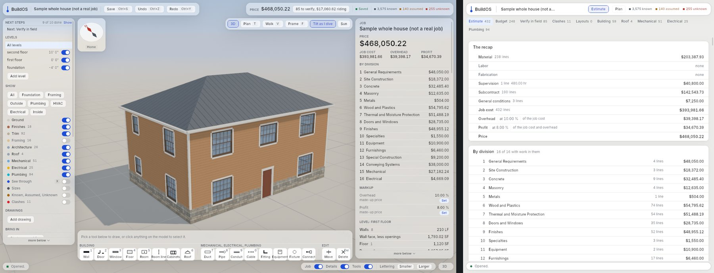
73dd7c0, 2026-11-26.Proven by demos/dressw.sh and demos/pricew.sh.
2. The model window
- The view bar is at the top: 3D, Plan, Walk, Frame, Sun.
- The Job panel is at the left: Next steps, Levels, Show, Drawings, Bring in, Write out.
- The Details panel is at the right. It shows the thing that you selected.
- The Tools bar is at the bottom: Building, then Mechanical, Electrical and Plumbing, then Edit.
- Three switches at the lower right put each panel away and bring it back.
On a small screen the panels fold. The size of the lettering has four steps. The program keeps the place and the size of each window for the next start.
If the program stops before you save, it keeps a recovery copy. At the next start it offers the copy to you.
The picture in section 1 shows each of them.
Proven by demos/glassw.sh and demos/screensw.sh.
3. Move the view
- Wheel: the view dives at the place under the pointer. One wheel goes from the whole lot to one hinge.
- Drag: the ground moves with your hand. A flick continues and slows down.
- Right drag, or Shift and drag, or the arrow keys: tilt and turn.
- Double-click a thing: the view flies to it. F frames the selected thing.
- North arrow: one click turns the view north-up. A double-click looks straight down.
- Page Up and Page Down go from level to level. T goes between plan and 3D.
- Tilt as I dive is a switch on the view bar.
No view jumps. Each move starts slowly and stops slowly.

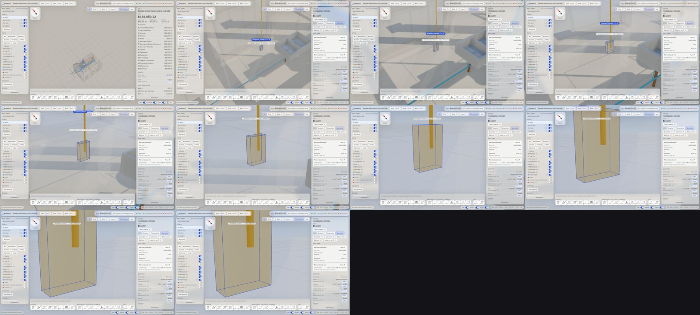
18e0ad8, 2026-11-26.Proven by demos/navw.sh. The script reads the path of the view frame by frame.
4. Bring in a plan and set its scale
- On the Job panel, select Add drawing. Pick the file from the list. Pick the page.
- Select Set scale. Click the two ends of one dimension on the drawing. Type the length that the dimension shows.
- To put a second drawing in line with the first, select Line up.
The program takes a PDF (drawn or scanned), a PNG, a JPEG and a scan (PLY) from the window. Where a PDF has drawn lines, the pointer catches them.

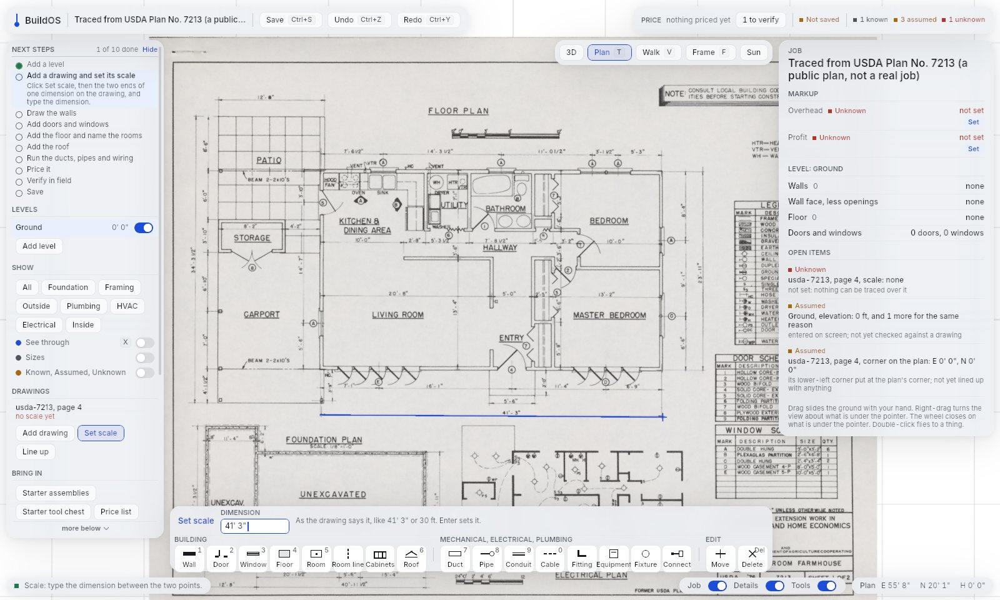
9ba06ea, 2026-11-23.Proven by demos/planw.sh and demos/firstw.sh (a plan in the public domain).
5. Trace the house
- Select Add level. Give the height to the next level.
- Select the Wall tool. The tool shows the sizes that it will make. Accept them or type other sizes. Click each corner. To make a wall of an exact length, type the length and press Enter.
- Select Door or Window. Click on a wall.
- Select Floor, then Room. Click in a closed room and give it a name.
- Select Roof. Click the corners of the footprint. Set the pitch.
- Select 3D on the view bar. The house stands on the tracing.
Each traced value is Assumed and says where it came from. Undo takes back one step.

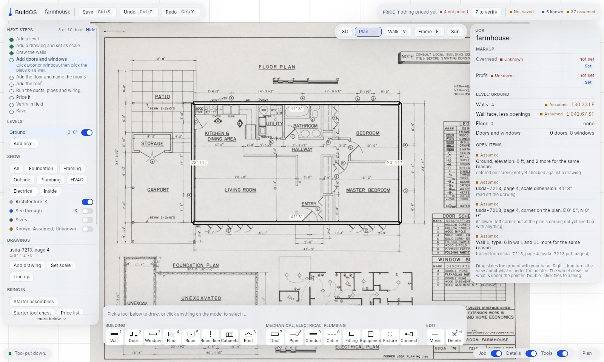
9ba06ea, 2026-11-23.
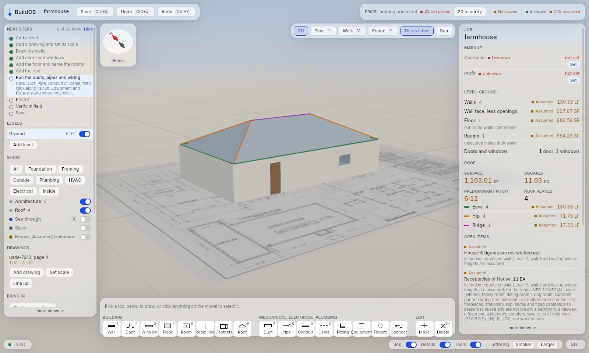
9ba06ea, 2026-11-23.Proven by demos/draww.sh, demos/planw.sh and demos/firstw.sh.
6. Enter a field measurement
- Select the thing. Its values are in the Details panel.
- Select Measure beside a value. Type the measured length, or shoot it with a laser in keyboard mode. The laser types the number at the cursor.
- The value is now Known. Its source is your measurement.
A clash that depended on the value confirms or clears. The price in the estimate window changes at the same time.
To take the list to the site on paper, write out the field sheet. Fill it in. Bring it back as a file (section 12).

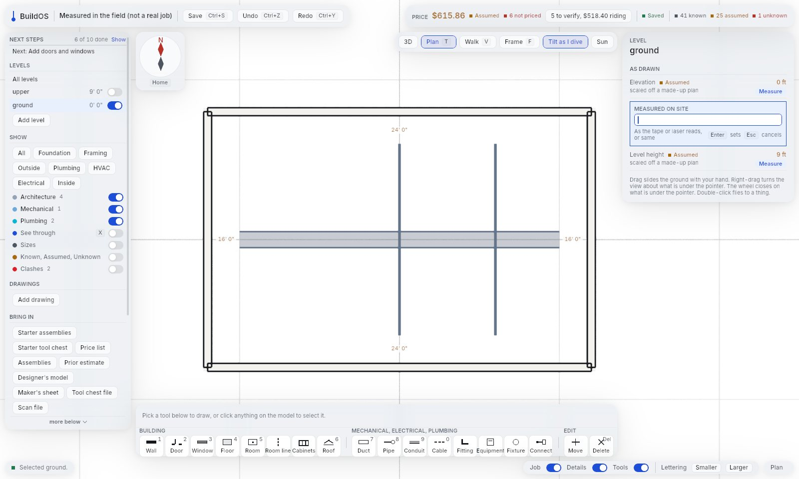
9ba06ea, 2026-11-23.Proven by demos/fieldw.sh and demos/field-sheet.sh.
7. Clashes and the verify-in-field list
- A clash between Assumed things is a question for the field.
- A clash between Known things is a finding.
- In the estimate window, the tab Clashes lists them. The tab Verify in field lists each question, where it is, and the dollars that depend on it. The largest dollars are first.
- Pick up a thing and move it (section 9). Its clashes light and clear while it moves.

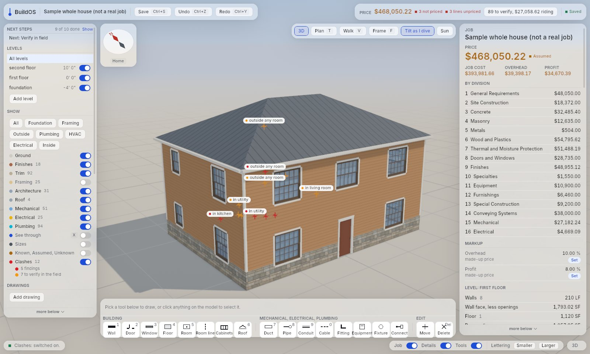
20a15ea, 2026-11-26.Proven by demos/clashw.sh, demos/tradesw.sh, demos/clash.sh and demos/vif.sh.
8. The estimate window
- The tab Estimate shows the recap and the 16 divisions. Other tabs show one division, the budget, the clashes and the field list.
- Each line shows its quantity, its formula and its source. You can change the stretch-out on the line.
- You can switch labor on or off for each line.
- Overhead and Profit are fields. Type a new percent.
- Price list (on the Job panel) brings in a supplier's list. The window shows three suppliers side by side.
- A price per SF or LF grows into line items for the same condition. The detail rolls up again to the same line.

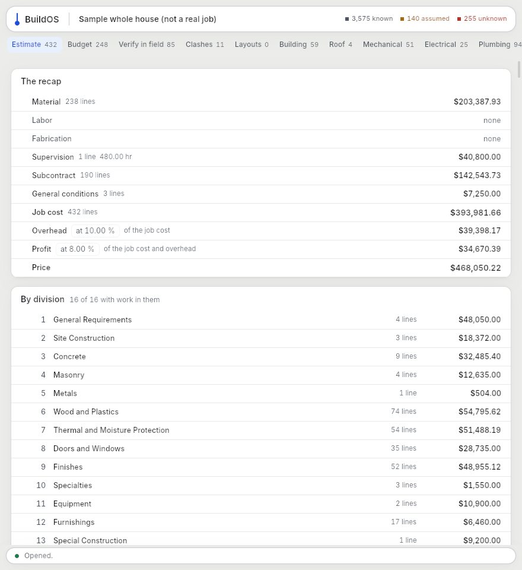
1a99772, 2026-11-25.Proven by demos/moneyw.sh, demos/pricew.sh, demos/d4w.sh and demos/d5w.sh.
9. Items: place, move, and the bench
- On the Job panel, select Starter tool chest. The items of each trade come in. An item from a maker's sheet comes in with Maker's sheet.
- Select Fixture or Equipment. Pick the item. Click where it goes.
- Select Move. Pick up the thing and put it down in its new place. A wall that you move takes the walls that meet it.
- Open an item on the bench to see it alone: its sizes, its shape, where it connects, and how it is priced.
Each size of an item from a sheet is Assumed and names the line of the sheet. A size that the sheet does not give is Unknown.

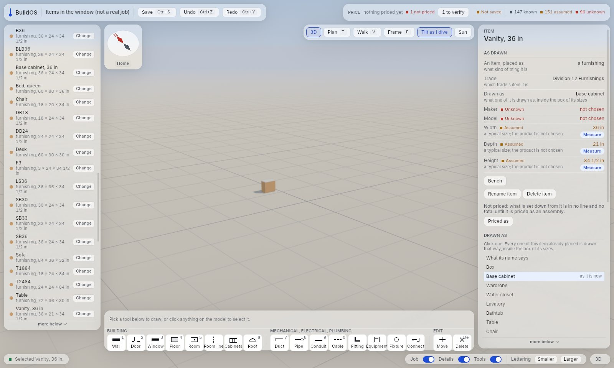
d1a72fe, 2026-11-26.
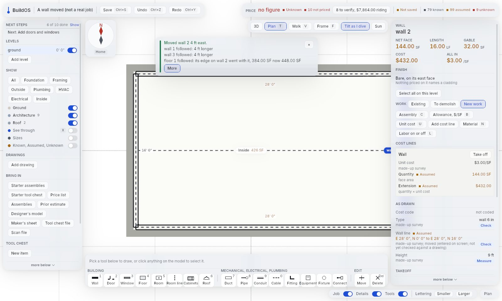
7ff4f38, 2026-11-26.
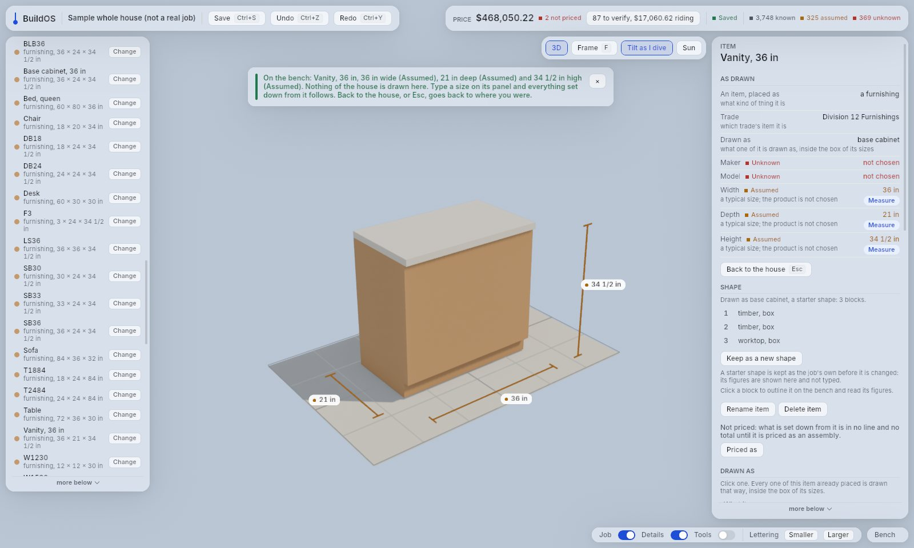
73dd7c0, 2026-11-26.Proven by demos/itemlibw.sh, demos/itemneww.sh, demos/movew.sh, demos/benchw.sh and demos/shapebenchw.sh.
10. Kitchens, renovation and layouts
- Cabinets: select the Cabinets tool. Click a wall. Type the codes of the boxes (for example
B15 B30 SB36). The run stands along the wall with its countertop. - Renovation: select a wall. Mark it Existing or To demolish. The lists show what to build, what stays and what comes down.
- Room line: divides an open plan into two rooms with no wall.
- Layouts: keep the job as another layout, change it, and set the two side by side with their prices.

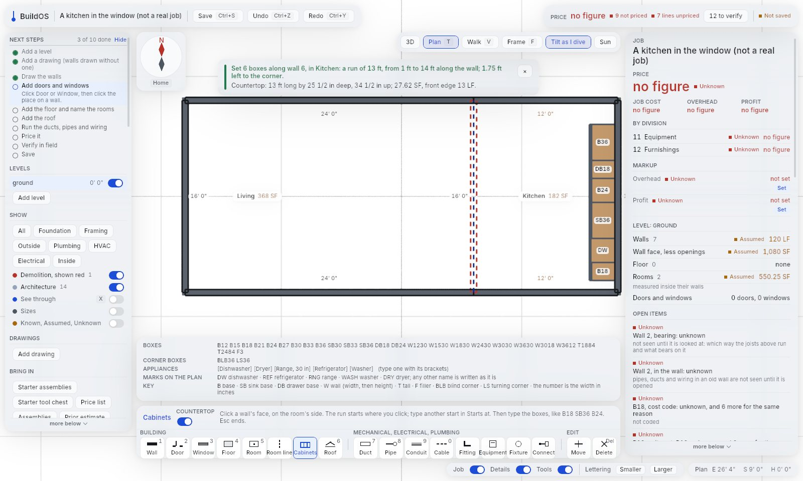
d04bd8f, 2026-11-26.
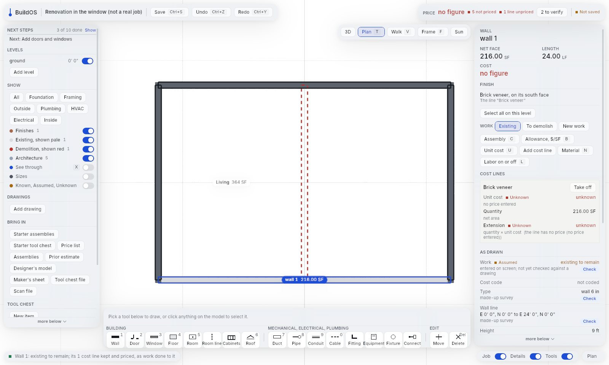
9ba06ea, 2026-11-23.Proven by demos/cabinetsw.sh, demos/renow.sh, demos/roomlinew.sh and demos/layoutsw.sh.
11. See each trade
The Show part of the Job panel has one switch for each layer: Foundation, Framing, Outside, Plumbing, HVAC, Electrical, Inside, Ground, Finishes, Roof, See through, Sizes. Each switch reads on or off at a glance. A trade is drawn only where the estimate prices it.
Sun on the view bar sets the month and the hour.

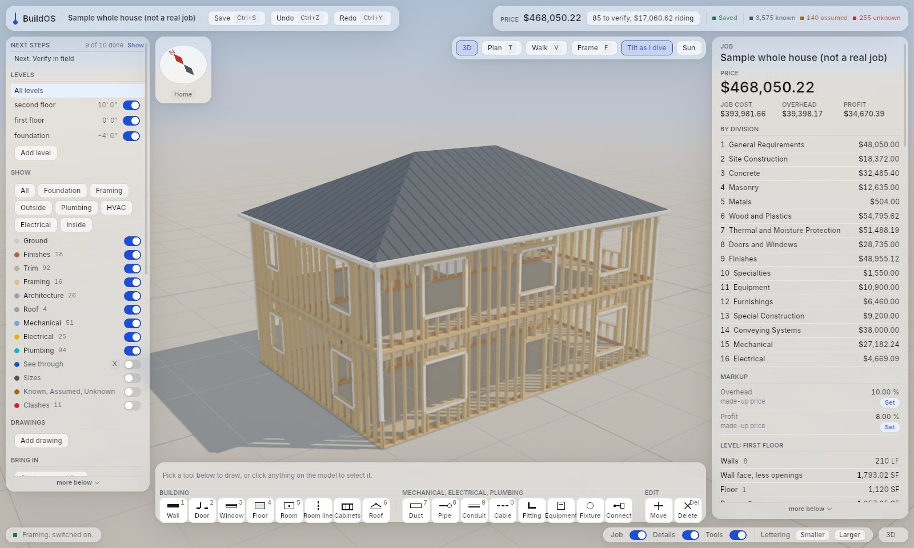
20a15ea, 2026-11-26.
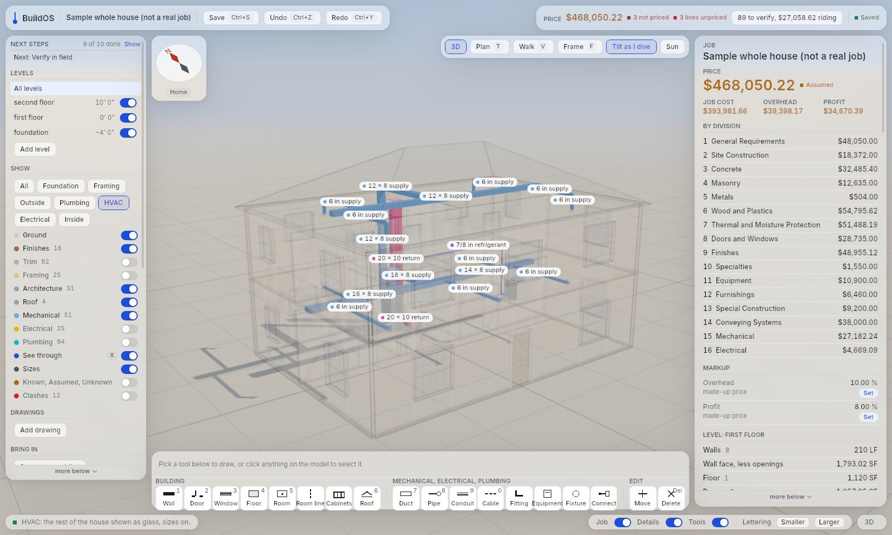
20a15ea, 2026-11-26.Proven by demos/tradesw.sh, demos/dressw.sh, demos/trimw.sh and demos/lightw.sh.
12. Bring in and write out
The window brings in these files, each picked from a list:
| File | Button on the Job panel |
|---|---|
| Plan: PDF, PNG, JPEG | Add drawing |
| Scan: PLY | Scan file |
| Another trade's or a designer's model: IFC | Designer's model |
| Supplier's price list: CSV, XLSX | Price list |
| Assemblies and a prior estimate: CSV, XLSX | Assemblies, Prior estimate |
| A maker's sheet: PDF | Maker's sheet |
| Items by trade: CSV | Tool chest file |
The window writes out the BIM model (IFC), the estimate as a workbook with live formulas, the estimate as CSV, and one sheet each for suppliers, subcontractors and the project manager.
The command line does more today. The window does not have these yet:
| Task | Command |
|---|---|
| A CAD drawing (DXF) or a TIFF as a plan | plumbline drawing <job> <level> "<name>" --file <file> |
| The plan of a level as a CAD drawing (DXF) | plumbline export dxf <job> <out.dxf> --level <level> |
| A scanner's own file (LAS, LAZ, E57) | plumbline import scan <job> <file> --level <level> |
| The measured marks on a PDF as quantities | plumbline import marks <job> <marked-up PDF> |
| All tables of the job in one workbook, out and back | plumbline export database, plumbline import database |
| The field sheet, out and back | plumbline export field-sheet, plumbline import field-sheet |
| The clashes as an issue list (BCF) | plumbline export bcf <job> <out.bcfzip> |
| The house as one 3D file (glTF) | plumbline export gltf <job> <out.glb> |
plumbline with no words after it lists each command. When a file loses something on the way in or out, the program says what it lost.

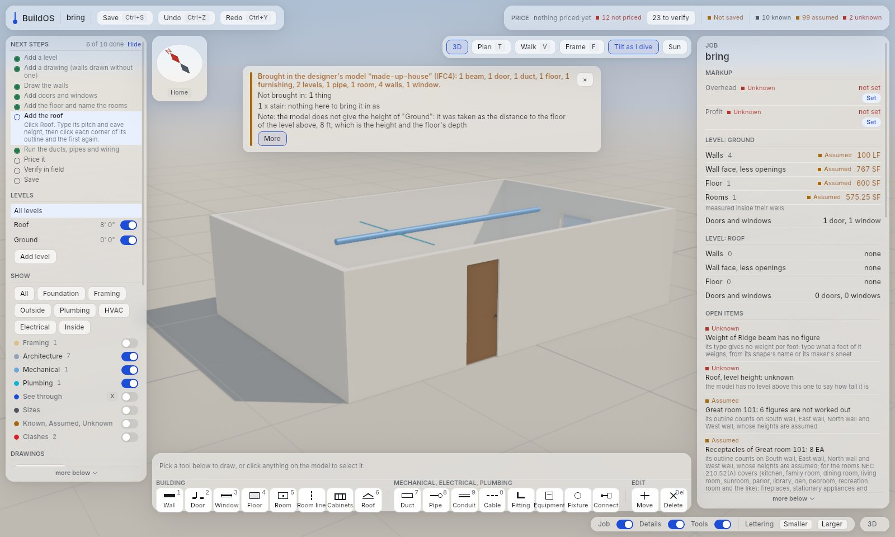
6f64a34, 2026-11-26.Proven by demos/bringw.sh, demos/scanw.sh and the command-line demonstrations imports, export, dxf, scan-files, marks, database, field-sheet, bcf and gltf.
13. Two plans side by side
At the top of the estimate window, select Plan. The window shows a plan in place of the estimate. Select Two plans to show two: two levels, or a drawing beside its tracing. Each plan moves by the same wheel and drag as the model window. A thing that you select in one window is marked in the other.

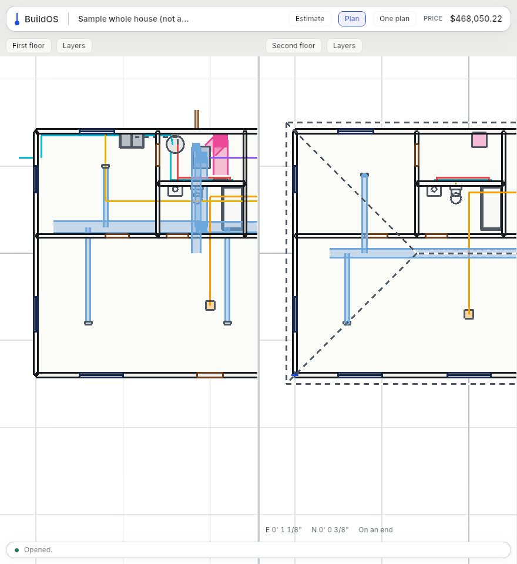
18e0ad8, 2026-11-26.Proven by demos/twoplansw.sh.
What is so now. This file is short and is rewritten in place (DECISIONS.md call 238): nothing is added below, and what is no longer so is taken out. How it came to be so is the calls in DECISIONS.md (DECISIONS-index.md finds one). Everything this file held before 2026-11-26 is STATUS-history.md.
As of 2026-11-26, the lead. It is not a release candidate and it is not tagged.
Where the work is
Patrick's ruling of 2026-11-26 (call 237): the repository was not acceptable as it stood. It is cleaned, in the nine steps below, before any new function is built; then the build goes on without asking him, and what he is sent is the manual, changed.
| Step | What | Where it stands |
|---|---|---|
| 1 | The lead's checks in the repository | Done. tools/check.sh, tools/window-run.sh, tools/quiet.sh, tools/index.sh. |
| 2 | Window demonstrations made sure; all forty-five run with nothing beside them | The kit is in (20a15ea): a press waits until the window has drawn. The builder's ten passed, each on its first run. The lead's own run of all forty-five is going, in parts. See "The window" below. |
| 3 | The manual; demos/captured/ let go | Done, and it goes on: manual/index.html (written by tools/manual.py from manual/manual.md, this file and manual/pictures/) is published to Patrick as one artifact, https://claude.ai/artifact/DTAkAoTGMcTYEkVAXdHLYt (to change it: tools/manual.py take the new pictures, tools/manual.py build, tools/manual.py page <file>, and publish that file with the pictures to the same address). Seventeen pictures, each stamped with the commit it is of (two are of 18e0ad8, three of 20a15ea; the oldest is of 2026-11-23); they are replaced as step 2's runs give new ones. demos/captured/ is no longer kept in the repository. |
| 4 | The documents put right | Done. Four lists are written by tools and checked by the commit hook (DECISIONS-index.md, the README's demonstrations, the table in LICENSES.md, the manual's page). TRY-IT.md is gone: the manual takes its place. |
| 5 | The earlier program off the branch; the commit hook BuildOS's own | Done. It is on main, whole. |
| 5b | Design review, and the window laid out again (calls 239, 240) | Judged; being built. A design judge on another model measured the screens and searched what shipping programs do (research/judgment-design-1126.md): Patrick is right, and it is now in figures. VISUAL.md section G has sixteen numbered lines; demos/quietw.md is the check, to be proved red first. Part A is contract 240A; part B (the Job panel into menus and sheets; the tools' second level) follows it. The outside designer's prompt is handoff/design-review-prompt.md; one reading is put to Patrick (QUESTIONS.md Q37). |
| 6 | The window takes every kind of file the command line takes | Not begun. Call 240 changes how: Bring in and Write out become one sheet each with a list, so a new kind of file is a row and not a button. Built with part B. |
| 7 | The eleven files over 2,000 lines cut | Not begun. |
| 8 | The name BuildOS through the code | Not begun. Last, alone. |
| 9 | Items 9 to 12 judged again | Not begun. |
What was run, and on which commit
- The command line's side, on b6dc2ab (the lead's own run, 2026-11-26): 1,344 tests of the six crates pass (the model 759, the command line 94, the workbook 7, the BIM file 131, the roof 122, the plans 231); all 69 command-line demonstrations pass and none says FAIL; the three gates, the port map and the licence check pass; the sample whole house (
plumbline sixteen) is 880d9fd3c364b5f7, as it has been, and prices at $393,981.66. - The window's own tests, on the build of 20a15ea: 110 pass.
tools/committed.shpassed on 1edb650 (108 test runs from a clean copy). It has not been run since; it is owed before the next push that changes code.- After the earlier program left the branch, the roofing crate's 122 tests were run again and pass (three of them read two of its files, now kept byte for byte in
crates/roofing/tests/engine/). The two rewritten gates were each proved red and green (tools/gate-language.sh --self-test; a socket and a network crate fortools/gate-egress.sh).
The window
Being proven on the head, all forty-five, by the lead's own run (tools/window-run.sh, nothing beside it, on the build of 20a15ea; its results are added here when it ends). Before the kit: twoplansw, tradesw and navw each passed on its first run on the build of 18e0ad8, where the double-click in a plan that had failed twice was repaired (it was the demonstration's own pacing). With the kit (20a15ea: a press is held until a frame has been drawn with it down; one double-click paced inside the program's half second), the builder's ten passed each on its first run: twoplansw, navw, tradesw, glassw, moneyw, pricew, screensw, movew, planw, clashw. The window's 110 tests pass.
The rule that was broken, and is now held by a tool. No build runs on the machine while a timed window demonstration runs. On 2026-11-26 the lead ran builds beside them in the idle class; navw, tradesw and twoplansw lost clicks or time, and a day's window evidence with them. tools/window-run.sh holds a lock and waits for cargo to be gone; every other cargo command goes through tools/quiet.sh.
What the window cannot do that the command line can (step 6): bring in a CAD drawing (DXF), a TIFF, a scanner's own files (LAS, LAZ, E57), the measured marks on a PDF, a maker's model, the database, the field's sheet; write out the issue list (BCF), the house as glTF, the field's sheet, the database, the cabinet rules. It brings in PDF, PNG, JPEG, CSV, XLSX, IFC and PLY.
Owed to the window from work already in the tree: its three counts of the chest (48) become 57 (cabinetsw, turnw, itemlibw; call 235); a cabinet made by a rule says so; a starter shape is still drawn through the program's list of forms and a washer's door is square (call 235, points 4 and 5).
The release candidate: the thirteen, as they stand
None is complete with evidence on one commit. "Judged" is by an agent that did not build it.
| # | Item | Where it stands |
|---|---|---|
| 1 | A clean clone installs on Linux from the README in one pass | A clean copy of 1edb650 builds and passes. The README's steps were last walked on a fresh system on 2026-11-22. |
| 2 | Every import works, each file picked from a list | Every kind is read at the command line. The window takes seven kinds (step 6). |
| 3 | A real residential plan PDF opened, scaled, traced; the 3D house builds | firstw does it on a public-domain plan; not run on the present build. |
| 4 | Clashes show their certainty; the VIF list is sorted by dollars | So at the command line: 11 in the sample house, 5 findings and 6 to verify; 85 questions, the most dollars first. clashw not run on the present build. |
| 5 | A typed or lasered measurement makes a value Known; the clash clears; the price moves in the second window | fieldw and moneyw passed on earlier builds; not run on the present one. A sheet filled in the field comes back by file (call 234). |
| 6 | A price per SF or LF grows into line items and rolls back up | d4 passes; d4w not run on the present build. |
| 7 | The estimate sheet: stretch-out, labor per line, overhead and profit, three suppliers | d5 passes; d5w and pricew not run on the present build. |
| 8 | xlsx with live formulas, CSV, IFC4 passed by IfcOpenShell; three lenses | So at the command line (export; IfcOpenShell 0.9.0 passes the file). Not all of it from the window. |
| 9 | A judge lists every word on every screen; none is a software term | Failed three times on 2026-11-16. Not judged since. The language gate passes. |
| 10 | A veteran with no software background completes a whole-house takeoff from a PDF | Passed once, on d20ac60 (2026-11-16). The window has changed much since. To judge again. |
| 11 | The visual judge passes every screen against VISUAL.md | Failed three times on 2026-11-16. Not judged since; the glass and the new movement came after. |
| 12 | A fresh judge cannot break the money path | Failed on 2026-11-16. Window judges of 2026-11-24 and 2026-11-25 found no wrong money; the item has not been judged whole since. |
| 13 | A hand estimate in refs/ reproduced, every difference explained | Pending: there is none in refs/. Only Patrick can place one. |
What is not right
- The window is behind the command line and unproven on the head (steps 2 and 6).
- The window is busy and its tools are cramped (Patrick, call 239). At 1600 by 960 the panels and bars cover a little over half the window; about ninety controls are in view at once; eighteen tools sit in one row with labels near 10 px; Show is said twice; the Details panel repeats the estimate window.
VISUAL.mdnow has the numbers (section G); the window does not yet meet them. Step 5b. - Eleven source files are over 2,000 lines (step 7):
crates/world/tests/world.rs6,713;crates/cli/src/main.rs4,310;crates/app/src/panels.rs4,017;crates/world/src/building.rs3,944;crates/app/src/scene.rs3,248;crates/plans/src/found.rs2,930;crates/ifc/src/lib.rs2,852;crates/world/src/editing.rs2,666; and three more. - The repository's history is 1.76 GB, most of it pictures. History is not rewritten (call 237). Pictures are no longer kept in the repository but for the manual's (one fixed name each, about 3 MB together), and the README's clone line takes only the newest commit.
- The folder, the crates and the two commands are still named plumbline (step 8).
- Neither wall finder turns a real phone scan, or a crowded plan, into walls by itself: a person traces and the finder helps.
- Designed and not built: an issue list (BCF) read back; a mesh brought in; glTF with each thing as its own shape; the sixteen division harnesses (
PROPOSALS.md21).
What only Patrick can give (nothing waits on it)
A sanitized hand estimate in refs/ (item 13); a sanitized PDF with his own measured marks (QUESTIONS.md Q36); a real LAZ and a real E57, sanitized; the production ruling, after the tag.
How the work is run
CLAUDE.md has the rules and the seats. handoff/README.md has how a worker and a judge are briefed, with the contracts as patterns. Two working copies at most are built in at once, and never while a window run holds the lock.